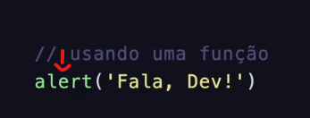

Funções
"Tags" / palavras de ação da linguagem JavaScript
- Agrupamento de código
- Reuso de código
- Mini programas dentro do programa maior
- Toda linguagem oferece muitas opções
Estrutura
Usando uma função / Criando uma função


Programação nada mais é do que ensinar o computador a partir de metodologias e passos:
JavaScript foi inicialmente criado para "fazer as págnias web mais vivas"
Os programas dessa linguagem são chamados scripts, estando em meio ao código HTML da págnia e executando enquanto a ela carrega.
Scripts são providos e executados como texto, sem necessidade de preparação ou programas especiais para executar.
Quando JavaScript foi criado, possuia inicialmente o nome de "LiveScript". Mas Java já era muito popular naquela época, então foi decidido que renomear a linguagem como um "irmão mais novo" do Java ajudaria na popularidade.
Ao evoluir, JavaScript se tornou uma linguagem totalmente independente, tendo atualmente nenhuma relação com Java.
Nas tecnoloias atuais, JavaScript pode não somente ser executado no browser, mas também no server e em qualquer dispositivo que possua um programa especial chamado "the JavaScript engine".
O browser possui geralmente uma engine imbutida, chamada "JavaScript virtual machine"
Diferentes engines possuem diferentes codinomes, como:
Os temos acima são importantes de serem lembrados pois são usados em artigos de programação.
Engines são complicadas, mas em seus aspectos básicos são:
A engine aplica otimizações para cada passo do processo. Até observa o script compilado enquando executa, analiza os dados que passam por ele e otimiza o código para a máquina baseado nessas informações.
O JavaScript moderno é uma lingua de programação "segura". Ela não necessita de acesso de baixo nível da memória ou da CPU pois foi inicialmente criada para browsers que não tinham essas necessidades.
In-browser, o JavaScript pode fazer tudo relacionado à manipulação da webpage, interação com o usuário e webserver.
Alguns exemplos são:
Existem 3 aspectos principais que qualificam o JavaScript:
JavaScript é a única tecnologia de browser que combina esses três aspectos.
Isso que o torna único, sendo a ferramenta mais disseminada mundialmente para criar interfaces do browser.
Além disso, também pode ser utilizada para criar servers, aplicações mobile, etc.
A programação JavaScript pode ser aplicada em aplicativos WEB, Desktop, e Mobile.
É utilizada pela maioria das empresas famosas e sucedidas na área da tecnologia (Google, Netflix, Tiktok)
Possui uma comunidade moderna e viva, que cresce de forma interativa entre seus usuários cade vez mais.
A primeira coisa que vamos estudar é a construção de blocos de código.
Statements são construções de sintaxe e comandos que executam ações.
Nós podemos ter quantos statements foram necessários em um arquivo de código. Statements podem ser separados com ponto e vírgula (;).
Por exemplo, aqui dividimos a mensagem "Hello World" em dois alertas.
alert('Hello'); alert('World');
Geralmente, diferentes statements são escritos em linhas separadas para tornar o código mais visível.
alert('Hello');
alert('World');
O ponto e vírgula pode ser omitido na maioria dos casos onde há uma quebra de linha:
alert('Hello')
alert('World')
Aqui, o JavaScript interpreta a quebra de linha como um ponto e vírgula implícito. Isso é chamado de inserção automática de ponto e vírgula.
Na maioria dos casos uma nova linha implica um ponto e vírgiula. Mas isso nem sempre acontece.
alert(3 +
1
+ 2);
O código acima resulta em 6 pois o JavaScript não insere ponto e vírgula. É intuitivamente óbvio que uma linha que termina com + representa uma expressão incompleta.
Os comentários no JavaScript podem ocupar apenas uma linha ou podem ser toda uma seção do código:
//Isso é uma linha de comentário própria
alert('Hello');
alert('World'); //Isso é um comentário que sucede o statement
Comentários multi-linha são realizados da mesma forma que no HTML:
/* Esse é um exemplo de
um comentário multi-linha
*/
alert('Hello');
alert('World');
Uma "Caixinha" onde guardamos um tipo de dado para usarmos mais tarde.
Os dados são informações que podem ser
ou dados mais
"Tags" / palavras de ação da linguagem JavaScript
Usando uma função / Criando uma função
Tudo são objetos. Possuem:

Criação de variável [ const celular = ]
Definição de atributos [ cor: "preto" , ligar: function() ]
Definição de função para atributo 'ligar' [ alert ("ligando") ]